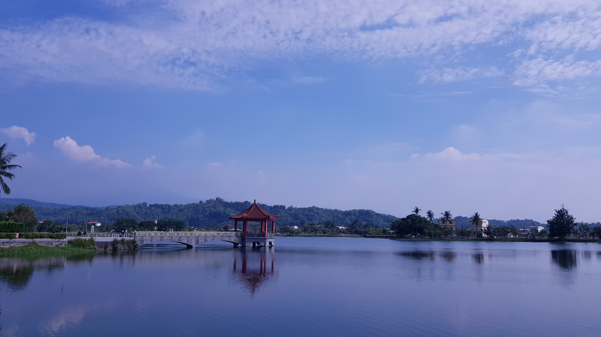

秋冬旅遊補助
9-12月最高省2000
美濃湖(中正湖)
中正湖原名瀰濃湖、中圳湖、中圳埤，位於高雄市美濃區羌子寮溪與大坑溪的匯流處，建於清乾隆十三年(西元1748年)，為一個築堤蓄水而成灌溉用的人工湖，是高雄市僅次於澄清湖的第二大湖。日據時期改建為蓄水庫，設置高6公尺的土石壩，是當地居民日常生活及農作灌溉所依靠的唯一水源，後因泥沙淤積，蓄水量大減而降低了灌溉的功能。 中正湖賞鳥區 中正湖雖然因泥沙淤積嚴重，但也因此而成為美濃與旗山等地區面積最大的湖泊濕地，擁有豐富的生態資源，除了常年可見的紅冠水雞、水雉與夜鷺等留鳥，每年的10月至翌年的3月都有大批的過冬候鳥停留棲息，鳥類多達60幾種，成為了一個孕育與賞鳥的最佳場所。 中正湖中建有一「中正亭」，是民國四十五年先總統蔣公兩度蒞臨後而興建的，並將中圳埤改名為中正湖，在亭中可飽覽湖光美景。民國85年由鄉民發起正名，欲將之更名為「美濃湖」。中正湖東北方有一美濃客家文物館，提供美濃客家文化與景點的導覽解說，而中正湖旅遊服務中心則提供出租單車，讓遊客來一趟輕鬆逍遙的環湖之旅，是週休二日親子同樂的好去處。
相關資訊
電話
無
地址
843高雄市美濃區
開放時間
24H
票價資訊
免費